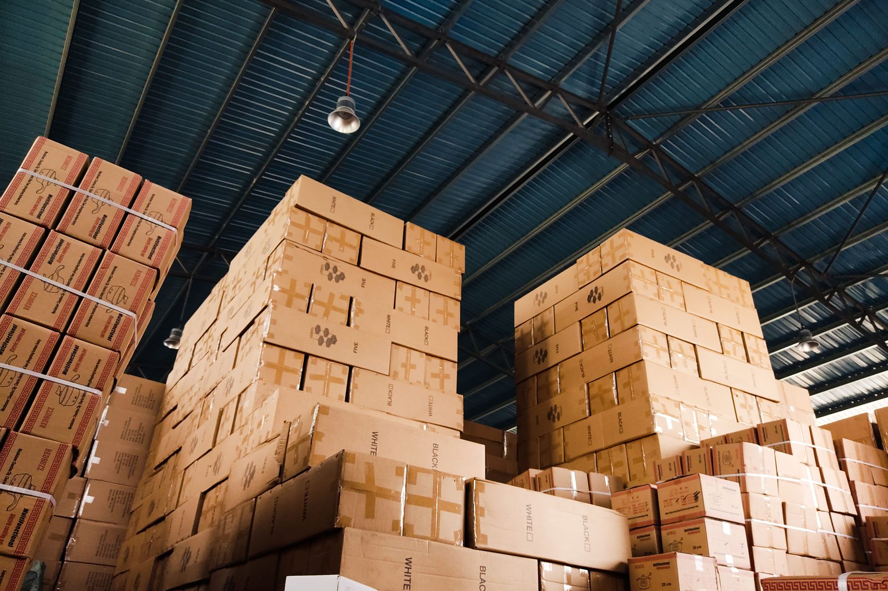
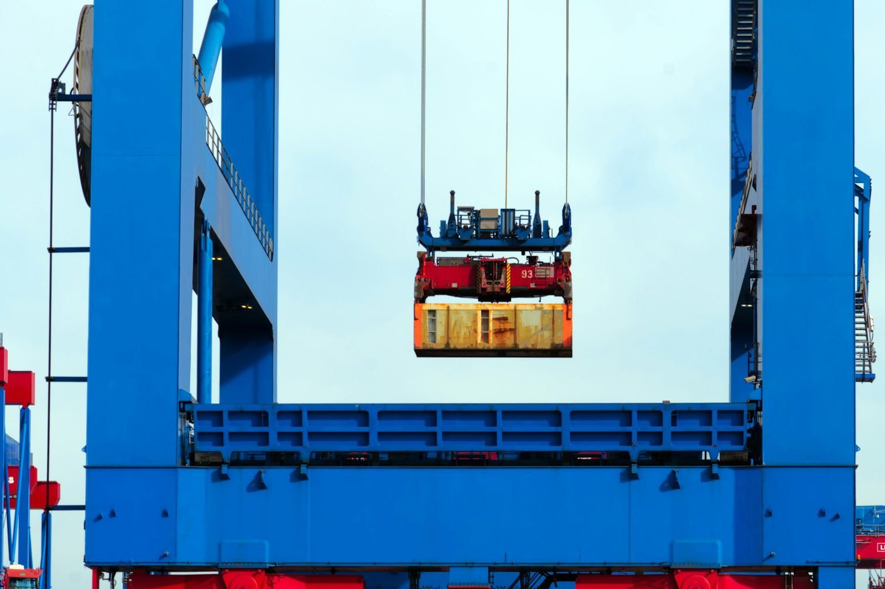

컨테이너 장치장 사전정렬 최적화
컨테이너 장치장과 철강 적치장에서 꺼낼 물건이 아래 쌓여 있을 때, 미리 어떤 순서로 옮겨 두면 나중에 꺼내는 작업(재취급)이 가장 적은지를 강화학습으로 계산합니다. 쌓여 있는 순서를 미리 바꿔 두는 이 작업을 사전정렬(pre-marshalling)이라고 부릅니다.
이런 현장에 적용합니다
물건을 여러 단으로 쌓아 두고 하나씩 꺼내는 곳이면 규모와 상관없이 같은 문제가 생깁니다.




사진은 현장을 보여 주기 위한 것이며 한누네의 납품 사례가 아닙니다.
무엇을 푸는 문제인가
컨테이너 터미널이나 철강 적치장은 물건을 여러 칸(스택)에 여러 층으로 쌓아 둡니다. 그런데 나중에 꺼내야 하는 순서와 지금 쌓여 있는 순서가 다르면, 먼저 꺼낼 물건 위에 나중에 꺼낼 물건이 올라가 있는 경우가 생깁니다.
이때는 위에 있는 물건을 일단 다른 칸으로 옮겨야 하는데, 이 작업(재취급)이 많아지면 크레인 작업 시간과 비용이 늘어납니다. 이 프로그램은 실제로 물건을 꺼내기 전에, 지금 상태에서 몇 번의 이동으로 모든 물건을 꺼내기 쉬운 순서로 사전정렬할 수 있는지, 그 이동 순서(경로) 자체를 미리 계산합니다.
계산 방식은 발명자 김태호(주식회사 한누네 대표)가 보유한 등록 특허 2건의 방법을 기반으로, 가치를 추정하는 신경망과 경로 탐색을 결합한 구조로 다시 구현했습니다.
검증한 결과 수치
아래 수치는 이 프로그램으로 직접 돌린 결과입니다. 최적해(이론상 가장 적은 이동 수)인지는 확인하지 않았고, 공개 벤치마크와의 비교도 아직 하지 않았습니다. 재취급 횟수와 이동 횟수를 줄이는 방향으로 학습된 결과만 보여드립니다.
| 문제 | 규모 | 최악 배치 (고정 평가 상태) | 무작위 배치 20개 (빔 탐색) |
|---|---|---|---|
| 컨테이너 터미널 | 8개 스택 x 5단, 컨테이너 32개 (전부 다른 출고 순서) | 34수 | 20개 전부 완료, 평균 24.1수 |
| 철강 적치장 | 8개 스택 x 4단, 강재 24장 | 15수 | 20개 전부 완료, 평균 10.7수 |
무작위 배치 20개를 돌려 측정한 값입니다.
데모
아래에서 문제(컨테이너 장치장 / 철강 적치장)와 배치 상태를 고르면, 계산한 이동 순서를 한 수씩 재생해 볼 수 있습니다.
기반 특허
이 프로그램은 아래 등록 특허 2건(발명자 김태호)의 방법을 기반으로 재구현했습니다.
제공 형태
현재 가격은 공시하지 않습니다. 아래 형태로 문의를 받습니다.
수탁 개발
터미널 운영 시스템(TOS)이나 장치장 관리 데이터에 맞춰 맞춤 개발합니다.
실증 (PoC)
보유하신 장치장 데이터로 사전정렬 효과를 먼저 실증해 볼 수 있습니다.
공동 과제 참여
항만·물류 관련 연구 과제나 공동 사업에 참여할 수 있습니다.